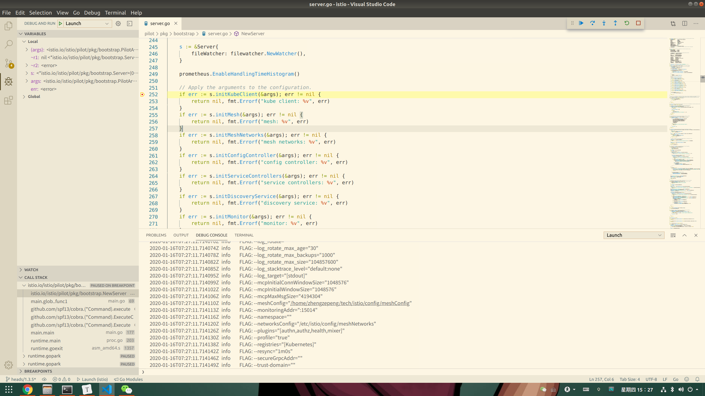

Pilot源码调试
本人使用的是vscode，下面介绍怎么用vscode来调试pilot的代码。
Pilot需要连接到apiserver获取service/endpoint等资源，也需要连接到Galley上获取各种配置，本人刚开始debug的时候忽略了配置到Galley的地址，导致一直连接不上。
launch.json
使用vscode进行调试需要定义launch.json配置文件，下面是我进行Pilot调试时的配置文件：
{
// Use IntelliSense to learn about possible attributes.
// Hover to view descriptions of existing attributes.
// For more information, visit: https://go.microsoft.com/fwlink/?linkid=830387
"version": "0.2.0",
"configurations": [
{
"name": "Launch",
"type": "go",
"request": "launch",
"mode": "auto",
"program": "/home/zhengzepeng/go/src/istio.io/istio/pilot/cmd/pilot-discovery/main.go",
"env": {},
"args": [
"discovery",
"--httpAddr",
":15007",
"--kubeconfig",
"/home/zhengzepeng/.kube/config",
"--secureGrpcAddr",
"",
"--meshConfig",
"/home/zhengzepeng/tech/istio/config/meshConfig"
]
}
]
}
下面有几个点需要注意下：
-
kubeconfig
使用kubectl连接到apiserver请求数据时，kubectl也需要加载一个配置文件，用于建立和apiserver的连接，同理这里使用到的配置文件的作用也是让Pilot能连接到apiserver.
最快获取这个配置文件的方式是到k8s master节点上拷贝文件下来：
[root@master kubernetes]# pwd /etc/kubernetes [root@master kubernetes]# ll 总用量 36 -rw------- 1 root root 5454 9月 5 22:43 admin.conf -rw------- 1 root root 5486 9月 5 22:43 controller-manager.conf -rw------- 1 root root 5458 9月 5 22:43 kubelet.conf drwxr-xr-x 2 root root 113 12月 31 04:07 manifests drwxr-xr-x 3 root root 4096 9月 5 22:43 pki -rw------- 1 root root 5438 9月 5 22:43 scheduler.conf [root@master kubernetes]# -
secureGrpcAddr
从其名称就知道使用安全加密的方式开启端口提供服务，内部会加载各种各样的证书，如果你有这些证书就忽略这步，没有的话，而且这个配置不设置为空，那么启动的时候就会报错：
Error: failed to create discovery service: discovery service: secure grpc server: open /etc/certs/cert-chain.pem: no such file or directory 2020-01-16T07:08:00.850402Z error failed to create discovery service: discovery service: secure grpc server: open /etc/certs/cert-chain.pem: no such file or directory如果仅仅是debug，建议这个直接设置为空，即不开启这样的端口进行监听。
-
meshConfig
这个指定的是Pilot使用过程中需要用到的网格的配置，这个我们关注点在于如何配置Galley的地址，这个配置下的configSources其实配置的就是Galley的地址，本人虚拟机下的Galley已经用NodePort的方式开放出来了，如下：
虚拟机上的master节点的ip为192.168.99.200，所以Galley的地址为192.168.99.200:31448，下面就展示下本人的meshConfig配置文件（其实就改了configSources而已）
disablePolicyChecks: false
reportBatchMaxEntries: 100
reportBatchMaxTime: 1s
enableTracing: true
accessLogFile: "/dev/stdout"
accessLogFormat: ""
accessLogEncoding: 'TEXT'
enableEnvoyAccessLogService: false
mixerCheckServer: istio-policy.istio-system.svc.cluster.local:9091
mixerReportServer: istio-telemetry.istio-system.svc.cluster.local:9091
policyCheckFailOpen: false
ingressService: istio-ingressgateway
connectTimeout: 10s
protocolDetectionTimeout: 100ms
dnsRefreshRate: 300s
sdsUdsPath: ""
trustDomain: ""
outboundTrafficPolicy:
mode: ALLOW_ANY
localityLbSetting:
enabled: true
rootNamespace: istio-system
configSources:
- address: 192.168.99.200:31448
defaultConfig:
connectTimeout: 10s
configPath: "/etc/istio/proxy"
binaryPath: "/usr/local/bin/envoy"
serviceCluster: istio-proxy
drainDuration: 45s
parentShutdownDuration: 1m0s
proxyAdminPort: 15000
concurrency: 2
tracing:
zipkin:
address: zipkin.istio-system:9411
controlPlaneAuthPolicy: NONE
discoveryAddress: istio-pilot.istio-system:15010
经过上面的配置之后，就可以开始Pilot的调试了，效果如下：
